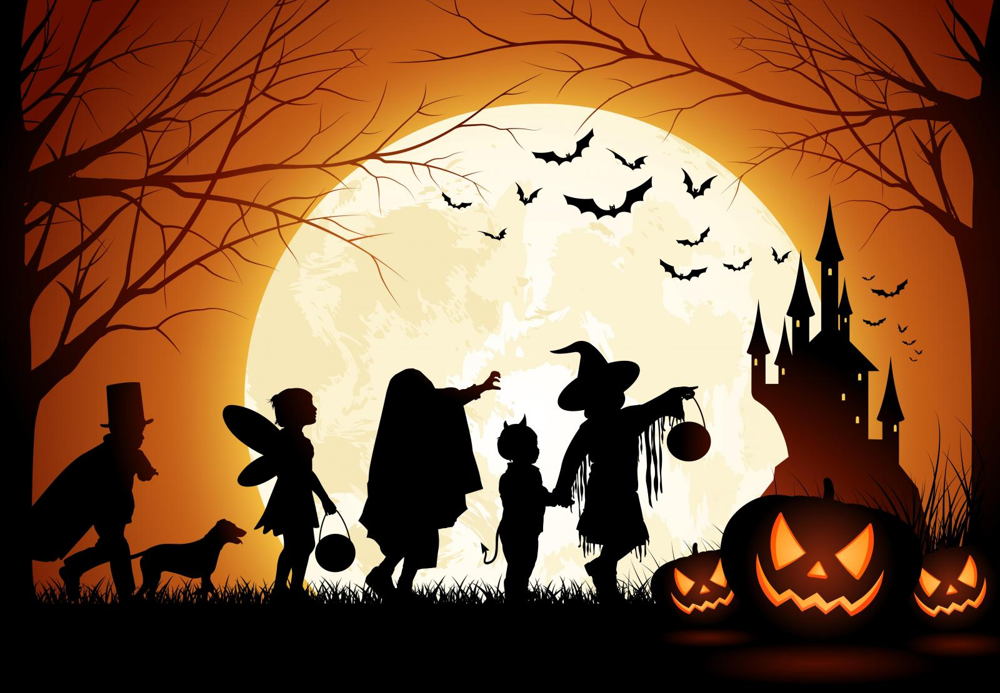

Straddling the line between fall and winter, plenty and paucity, life and death, Halloween is a time of celebration and superstition. It is thought to have originated with the ancient Celtic festival of Samhain, when people would light bonfires and wear costumes to ward off roaming ghosts. In the eighth century, Pope Gregory III designated November 1 as a time to honor all saints and martyrs; the holiday, All Saints’ Day, incorporated some of the traditions of Samhain. The evening before was known as All Hallows’ Eve and later Halloween. Over time, Halloween evolved into a secular, community-based event characterized by child-friendly activities such as trick-or-treating. In a number of countries around the world, as the days grow shorter and the nights get colder, people continue to usher in the winter season with gatherings, costumes and sweet treats.
